Chapter 8 Raster Spatial Analysis
Raster spatial analysis is particularly important in environmental analysis, since much environmental data is continuous in nature, based on continuous measurements from instruments (like temperature, pH, air pressure, water depth, elevation), and raster models work well with continuous data. In the Spatial Data and Maps chapter, we looked at creating rasters from scratch, or converted from features, and visualizing them. Here we’ll explore raster analytical methods, commonly working from existing information-rich rasters like elevation data, where we’ll start by looking at terrain functions.
We’ll make a lot of use of terra functions in this chapter, as this package is replacing the raster package which has been widely used. One raster package that’s probably also worth considering is the stars package.
8.1 Terrain functions
Elevation data is particularly information-rich, and a lot can be derived from them that informs us about the nature of landscapes and what drives surface hydrologic and geomorphic processes as well as biotic habitat (some slopes are drier than others, for instance). We’ll start by reading in some elevation data from the Marble Mountains of California (Figure 8.1) and use terra’s terrain function to derive slope (Figure 8.2), aspect (Figure 8.3), and hillshade rasters.
FIGURE 8.1: Marble Mountains (California) elevation
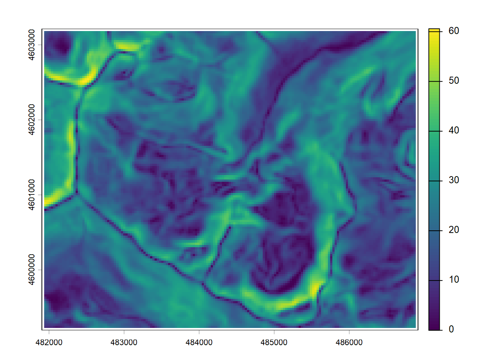
FIGURE 8.2: Slope
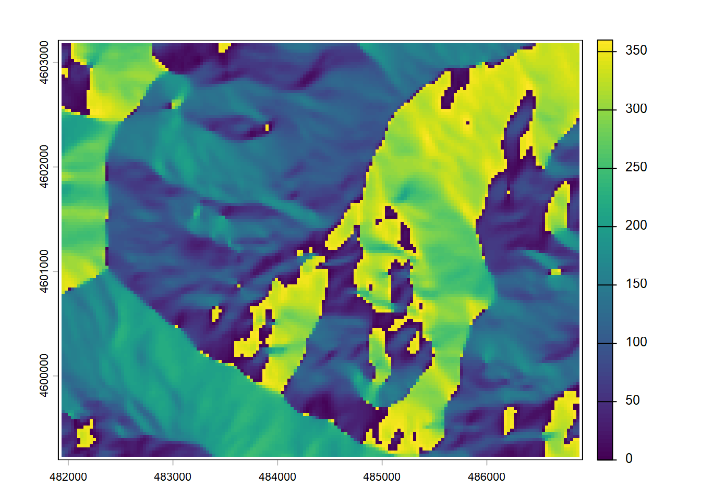
FIGURE 8.3: Aspect
… then we’ll use terra::classify to make six discrete categorical slope classes (though the legend suggests it’s continuous) (Figure 8.4)…
slopeclasses <-matrix(c(00,10,1, 10,20,2, 20,30,3,
30,40,4, 40,50,5, 50,90,6), ncol=3, byrow=TRUE)
slopeclass <- classify(slope, rcl = slopeclasses)
plot(slopeclass)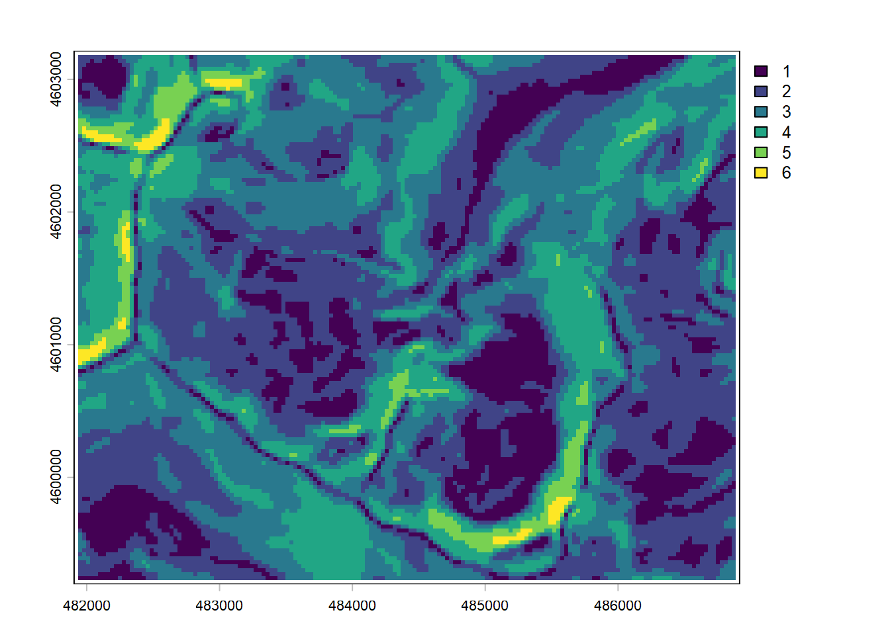
FIGURE 8.4: Classified slopes
Then a hillshade effect raster with slope and aspect as inputs after converting to radians (Figure 8.5):
hillsh <- shade(slope/180*pi, aspect/180*pi, angle=40, direction=330)
plot(hillsh, col=gray(0:100/100))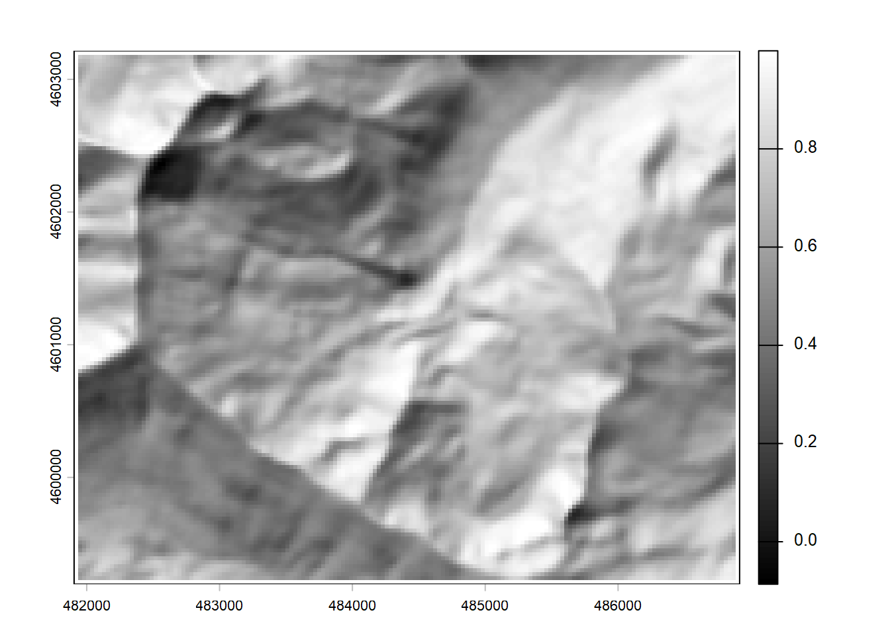
FIGURE 8.5: Hillshade
8.2 Map Algebra in terra
Map algebra was originally developed by Dana Tomlin in the 1970s and 1980s (Tomlin (1990)), and was the basis for his Map Analysis Package. It works by assigning raster outputs from an algebraic expression of raster inputs. Map algebra was later incorporated in Esri’s Grid and Spatial Analyst subsystems of ArcInfo and ArcGIS. Its simple and elegant syntax makes it still one of the best ways to manipulate raster data.
Let’s look at a couple of simple map algebra statements to derive some new rasters, such as converting elevation in metres to feet (Figure 8.6).
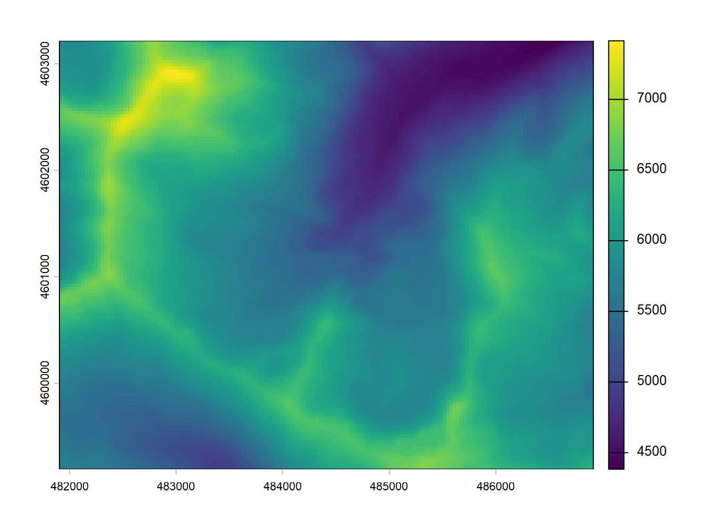
FIGURE 8.6: Map algebra conversion of elevations from metres to feet
… including some that create and use Boolean (true-false) values, where 1 is true and 0 is false, so might answer the question “Is it steep?” (as long as we understand 1 means Yes or true) (Figure 8.7)…
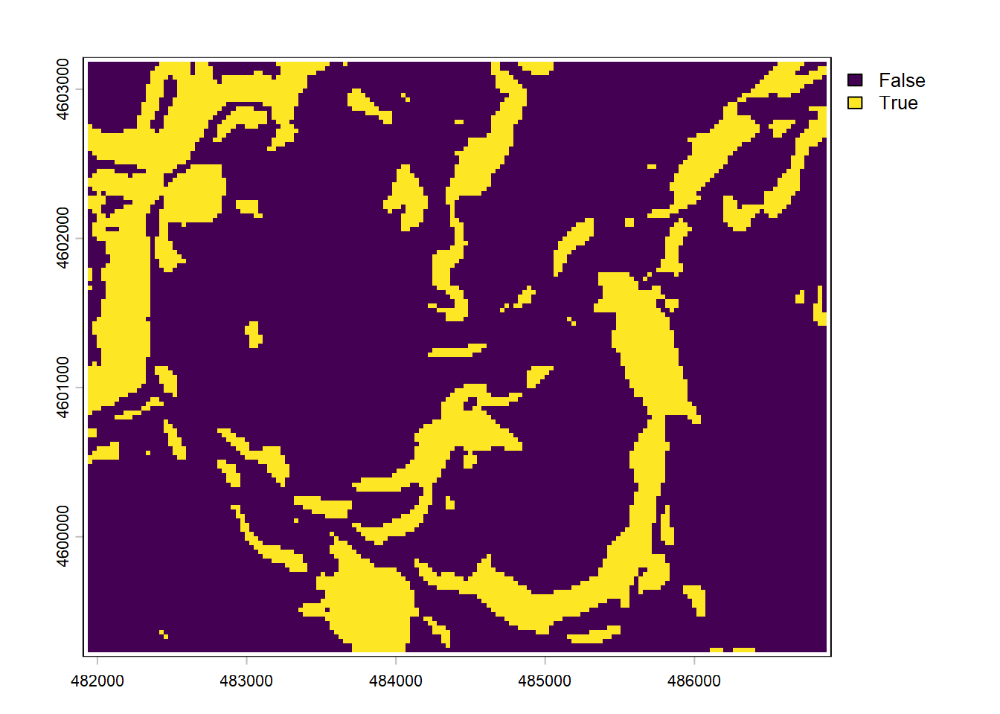
FIGURE 8.7: Boolean: slope > 30
… or Figure 8.8, which shows all areas that are steeper than 30 degrees and above 2,000 m elevation.
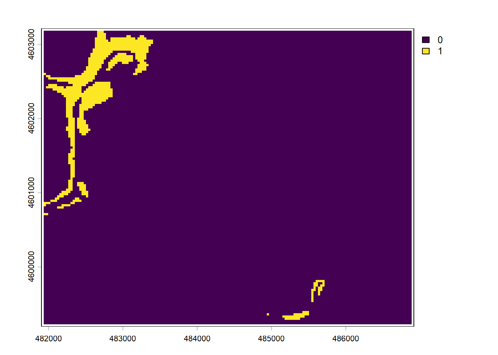
FIGURE 8.8: Boolean intersection: (slope > 30) * (elev > 2000)
When plotting in tmap, it’s cartographically useful to convert zeros to NA values to be transparent. I guess the same can be said for base plot or ggplot. To make the zeros transparent and plot them, try the method in the second line of code here (though it does alter the meaning of the raster
steepwith NAs instead of zeros) (Figure 8.9.
Since the tm_basemap method doesn’t seem to work with rasters in tmap 4.0 (might be coming with 4.1), we could use the trick we used in the previous chapter to create a raster from the basemap and display that. We’ll plot the steep raster before the basemap to set the bounding box properly.
library(tmap); library(maptiles); library(sf)
steep[steep==0] <- NA
mblBase <- get_tiles(steep, provider="OpenTopoMap")
tm_shape(steep) +
tm_raster(col_alpha=0.5,
col.scale=tm_scale_categorical(values=c("red")),
col.legend = tm_legend("steep", frame=F)) +
tm_shape(mblBase) +
tm_rgb(col_alpha=0.5)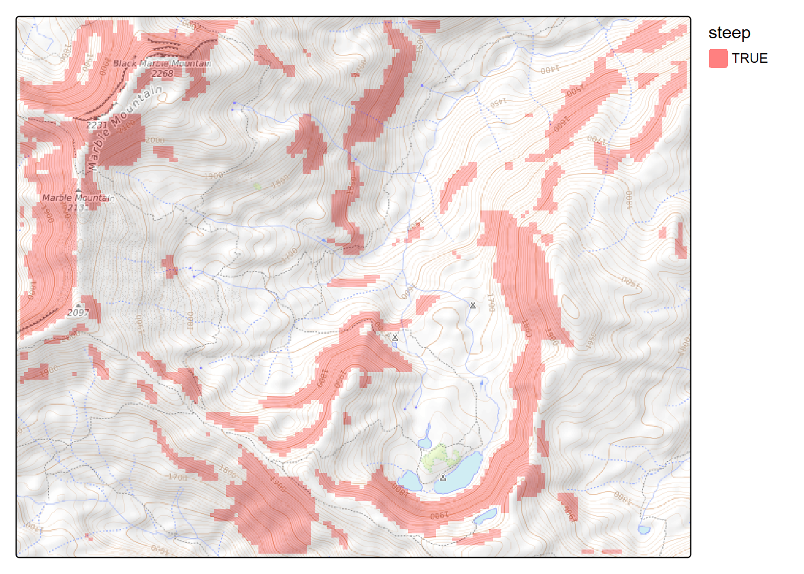
FIGURE 8.9: Steep Areas
You should be able to imagine that map algebra is particularly useful when applying a model equation to data to create a prediction map. For instance, later we’ll use lm() to derive linear regression parameters for predicting February temperature from elevation in the Sierra …
\[ Temperature_{prediction} = 11.88 - 0.006{elevation} \]
… which can be coded in map algebra something like the following if we have an elevation raster, to create a tempPred raster:
8.3 Distance
A continuous raster of distances from significant features can be very informative in environmental analysis. For instance, distance from the coast or a body of water may be an important variable for habitat analysis and ecological niche modeling. The goal of the following is to derive distances from streams as a continuous raster.
We’ll need to know what cell size to use and how far to extend our raster. If we have an existing study area raster, this process is simple. We start by converting streams from a SpatVector to a SpatRaster, as we did a couple of chapters ago. The terra::distance() function then uses this structure to provide the cells that we’re deriving distance from and then uses that same cell size and extent for the output raster. If we instead used vector features, the distance function would return point-to-point distances, very different from deriving continuous rasters of Euclidean distance (Figure 8.10).
streams <- vect(ex("marbles/streams.shp"))
elev <- rast(ex("marbles/elev.tif"))
stdist <- terra::distance(rasterize(streams,elev))
plot(stdist)
lines(streams)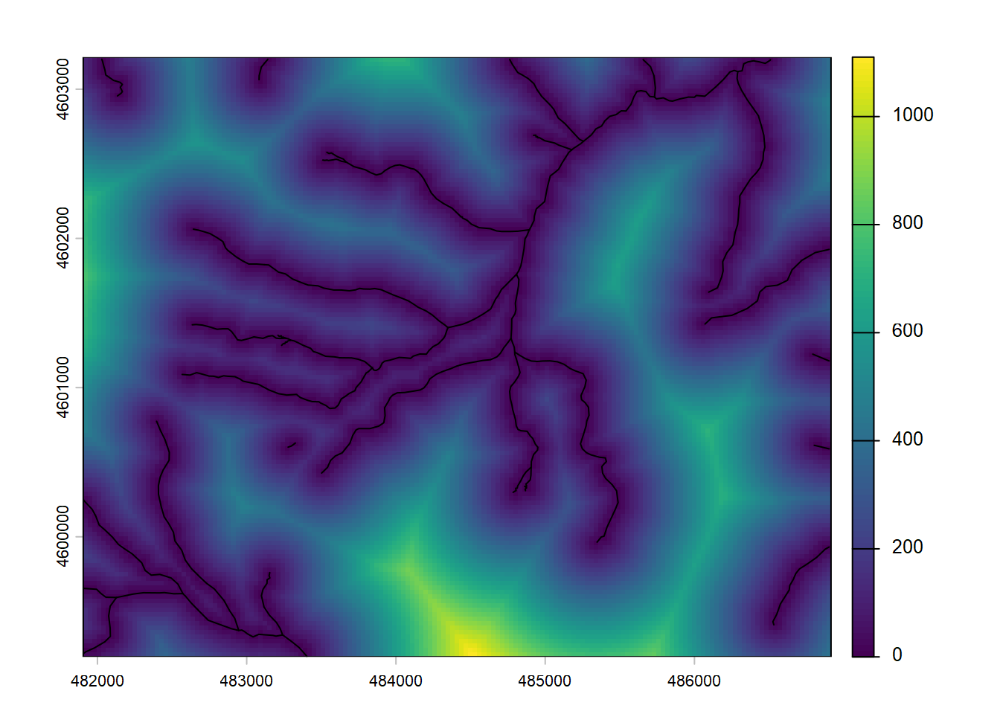
FIGURE 8.10: Stream distance raster
If we didn’t have an elevation raster, we could use the process we employed while converting features to rasters in the Spatial Data and Maps chapter, where we derived a raster template from the extent of streams, as shown here:
streams <- vect(ex("marbles/streams.shp"))
XMIN <- ext(streams)$xmin
XMAX <- ext(streams)$xmax
YMIN <- ext(streams)$ymin
YMAX <- ext(streams)$ymax
aspectRatio <- (YMAX-YMIN)/(XMAX-XMIN)
cellSize <- 30
NCOLS <- as.integer((XMAX-XMIN)/cellSize)
NROWS <- as.integer(NCOLS * aspectRatio)
templateRas <- rast(ncol=NCOLS, nrow=NROWS,
xmin=XMIN, xmax=XMAX, ymin=YMIN, ymax=YMAX,
vals=1, crs=crs(streams))
strms <- rasterize(streams,templateRas)
stdist <- terra::distance(strms)
plot(stdist)
lines(streams)In deriving distances, it’s useful to remember that distances can go on forever (well, on the planet they may go around and around, if we were using spherical coordinates) so that’s another reason we have to specify the raster structure we want to populate.
8.4 Extracting Values
A very useful method or environmental analysis and modeling is to extract values from rasters at specific point locations. The point locations might be observations of species, soil samples, or even random points, and getting continuous (or discrete) raster observations can be very useful in a statistical analysis associated with those points. The distance from streams raster we derived earlier, or elevation, or terrain derivatives like slope and aspect might be very useful in a ecological niche model, for instance. We’ll start by using random points and use these to extract values from four rasters:
- elev: read in from elev.tif
- slope: created from elev with terrain
- str_dist: euclidean distance to streams
- geol: rasterized from geology polygon features
library(igisci); library(terra); library(tidyverse); library(sf)
geolshp <- st_read(ex("marbles/geology.shp")) |>
rename(geology=CLASS)
streams <- vect(ex("marbles/streams.shp"))
elev <- rast(ex("marbles/elev.tif"))
slope <- terrain(elev, v="slope")
str_dist <- terra::distance(rasterize(streams,elev))
geol <- rasterize(geolshp,elev,field="geology") Note that in contrast to the other rasters, the stream distance raster ends up with no name, so we should give it a name:
## [1] "slope"## [1] "layer"On the raster
namesproperty: You’ll find that many terra functions may not assign thenamesproperty you’d expect, so it’s a good idea to check withnames()and maybe set it to what we want, as we’ve just done forstr_dist. As we’ll see later with the focal statistics function, the name of the input is used even though we’ve modified it in the function result, and that may create confusion when we use it. We just saw that thedistance()function produced an empty name, and there may be others you’ll run into. For many downstream uses, the names property may not matter, but it will be important when we extract values from rasters into points where thenamesproperty is assigned to the variable created for the points.
Then we’ll create 200 random xy points 9.2.3 within the extent of elev, and assign it the same crs.
library(sf)
x <- runif(200, min=xmin(elev), max=xmax(elev))
y <- runif(200, min=ymin(elev), max=ymax(elev))
rsamps <- st_as_sf(data.frame(x,y), coords = c("x","y"), crs=crs(elev))To visualize where the random points land, we’ll map them on the geology sf, streams, and contours created from elev using default settings. The terra::as.contour function will create these as SpatVector data (Figure 8.11). We’ll create a template map with a hillshade base to build on with tmap.
library(tidyverse); library(tmap)
cont <- as.contour(elev, nlevels=30)
geology <- st_read(ex("marbles/geology.shp")) |>
rename(geology=CLASS)
aspect <- terrain(elev, v="aspect")
hillsh <- shade(slope/180*pi, aspect/180*pi, angle=40, direction=330)
marblesTemplate <- tm_graticules() +
tm_shape(hillsh) +
tm_raster(col.scale=tm_scale_continuous(values="-brewer.greys"),
col.legend=tm_legend(show=F),col_alpha=1.0) +
tm_shape(cont) + tm_lines(col="darkgray", col_alpha=0.5) +
tm_shape(streams) + tm_lines(col="blue")marblesTemplate +
tm_shape(geology) +
tm_polygons(fill="geology", fill_alpha=0.5, fill.legend=tm_legend(frame=F)) +
tm_shape(rsamps) + tm_dots(fill="black", size=0.3)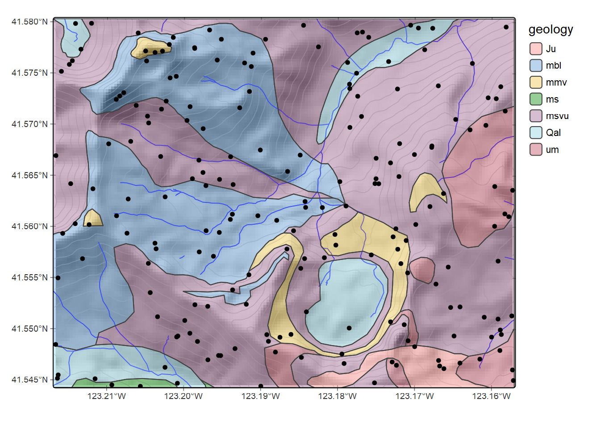
FIGURE 8.11: Random points in the Marble Valley area, Marble Mountains, California
Now we’ll extract data from each of the rasters, using an S4 version of rsamps, and then bind them together with the rsamps simple features. We’ll have to use terra::vect and sf::st_as_sf to convert feature data to the type required by specific tools, and due to a function naming issue, we’ll need to use the package prefix with terra::extract, but otherwise the code is pretty straightforward.
rsampS4 <- vect(rsamps)
elev_ex <- terra::extract(elev, rsampS4) |> dplyr::select(-ID)
slope_ex <- terra::extract(slope, rsampS4) |> dplyr::select(-ID)
geol_ex <- terra::extract(geol, rsampS4) |> dplyr::select(-ID)
strD_ex <- terra::extract(str_dist, rsampS4) |> dplyr::select(-ID)
rsampsData <- bind_cols(rsamps, elev_ex, slope_ex, geol_ex, strD_ex)Then plot the map with the points colored by geology (Figure 8.12)…
marblesTemplate +
tm_shape(rsampsData) + tm_dots(fill="geology", size=0.4,fill.legend=tm_legend(frame=F))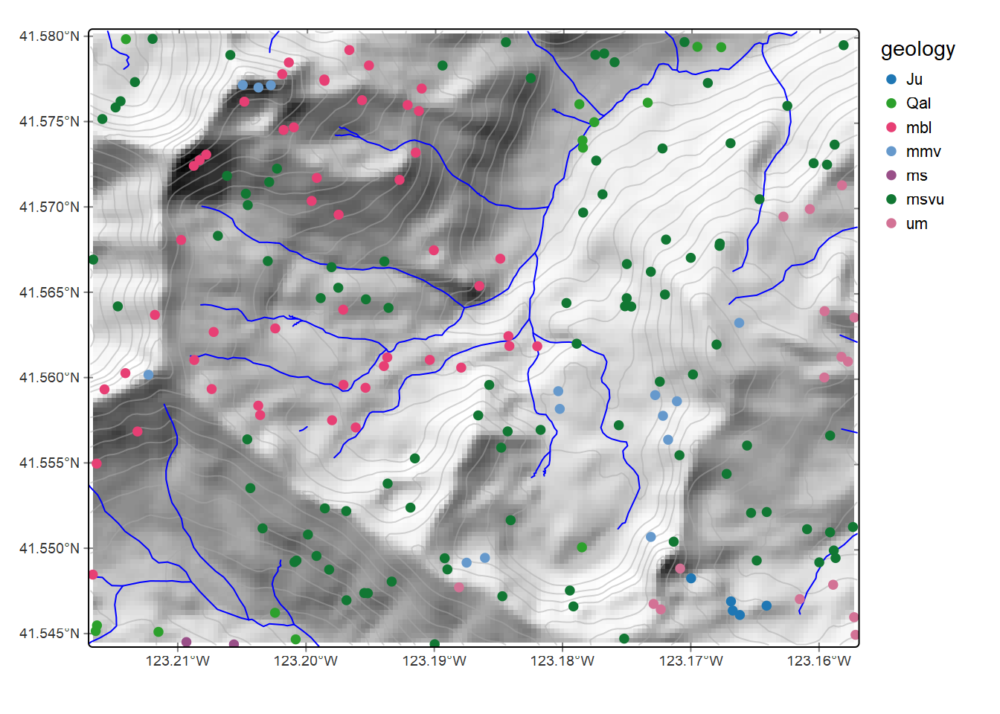
FIGURE 8.12: Points colored by geology extracted from raster
… and finally str_dist by elev, colored by geology, derived by extracting. We’ll filter out the NAs along the edge (Figure 8.13). Of course other analyses and visualizations are possible.
rsampsData |>
filter(!is.na(geology)) |>
ggplot(aes(x=str_dist,y=elev,col=geology)) +
geom_point() + geom_smooth(method = "lm", se=F)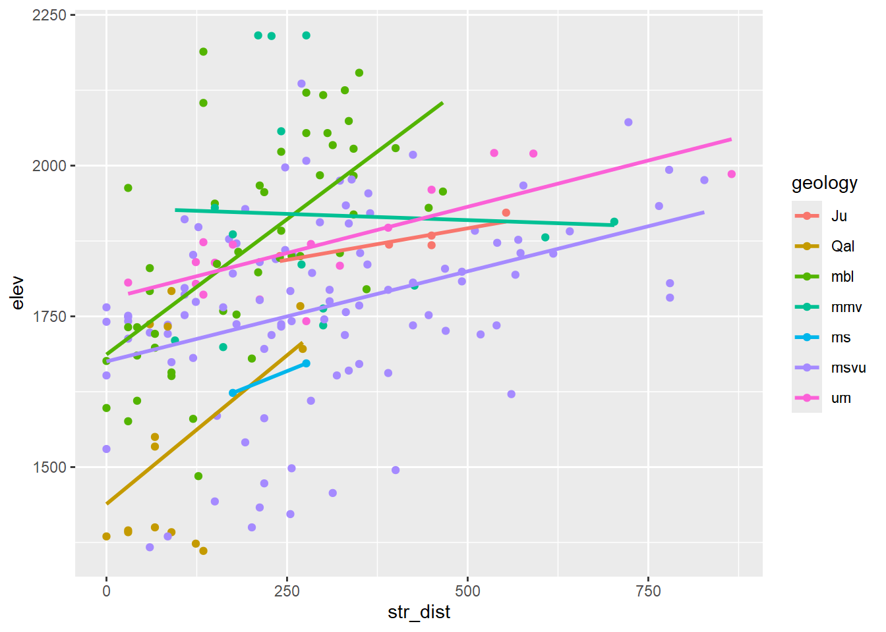
FIGURE 8.13: Elevation by stream distance, colored by geology, random point extraction
Here’s a similar example, but using water sample data, which we can then use to relate to extracted raster values to look at relationships such as in Figures 8.14, 8.15, and 8.16. It’s worthwhile to check various results along the way, as we did above. Most of the code is very similar to what we used above, including dealing with naming the distance rasters.
streams <- vect(ex("marbles/streams.shp"))
trails <- vect(ex("marbles/trails.shp"))
elev <- rast(ex("marbles/elev.tif"))
geology <- st_read(ex("marbles/geology.shp")) |>
rename(geology=CLASS)
sampsf <- st_read(ex("marbles/samples.shp")) |>
dplyr::select(CATOT, MGTOT, PH, TEMP, TDS)
samples <- vect(sampsf)
strms <- rasterize(streams,elev)
tr <- rasterize(trails,elev)
geol <- rasterize(geology,elev,field="geology")
stdist <- terra::distance(strms); names(stdist) <- "stDist"
trdist <- terra::distance(tr); names(trdist) = "trDist"
slope <- terrain(elev, v="slope")
aspect <- terrain(elev, v="aspect")
elev_ex <- terra::extract(elev, samples) |> dplyr::select(-ID)
slope_ex <- terra::extract(slope, samples) |> dplyr::select(-ID)
aspect_ex <- terra::extract(aspect, samples) |> dplyr::select(-ID)
geol_ex <- terra::extract(geol, samples) |> dplyr::select(-ID)
strD_ex <- terra::extract(stdist, samples) |> dplyr::select(-ID)
trailD_ex <- terra::extract(trdist, samples) |> dplyr::select(-ID)
samplePts <- cbind(samples,elev_ex,slope_ex,aspect_ex,geol_ex,strD_ex,trailD_ex)
samplePtsDF <- as.data.frame(samplePts)## CATOT MGTOT PH TEMP TDS elev slope aspect geology stDist
## 1 0.80 0.02 7.74 15.3 0.16 1357 1.721006 123.690068 Qal 0.0000
## 2 0.83 0.04 7.88 14.8 0.16 1359 6.926249 337.833654 Qal 30.0000
## 3 0.83 0.04 7.47 15.1 0.12 1361 4.222687 106.389540 Qal 0.0000
## 4 0.63 0.03 7.54 15.8 0.17 1356 2.160789 353.659808 Qal 0.0000
## 5 0.67 0.06 7.67 14.0 0.14 1374 1.687605 81.869898 Qal 0.0000
## 6 0.70 0.04 7.35 7.0 0.16 1399 12.713997 4.236395 msvu 192.0937
## trDist
## 1 169.7056
## 2 318.9044
## 3 108.1665
## 4 241.8677
## 5 150.0000
## 6 342.0526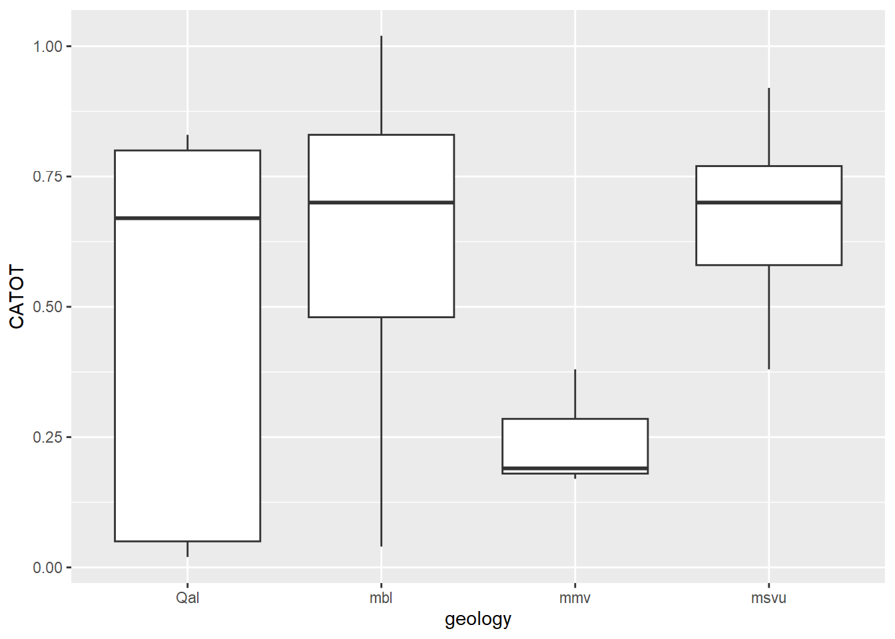
FIGURE 8.14: Dissolved calcium carbonate grouped by geology extracted at water sample points
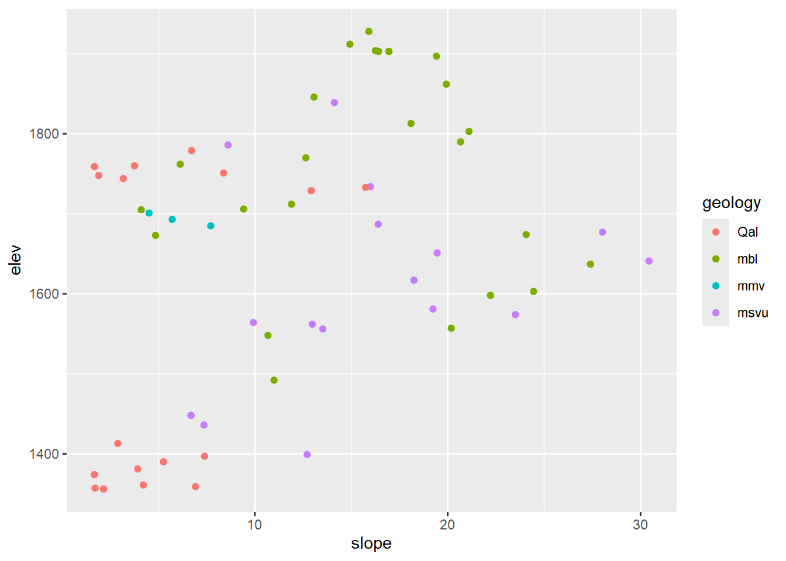
FIGURE 8.15: Slope by elevation colored by extracted geology
marblesTemplate +
tm_shape(geolshp) + tm_polygons(fill="geology", fill_alpha=0.5, fill.legend=tm_legend(frame=F)) +
tm_shape(sampsf) + tm_dots(size="CATOT")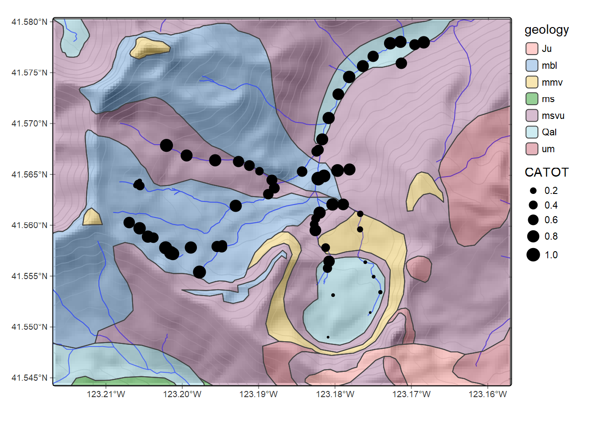
FIGURE 8.16: Calcium carbonate total hardness at sample points, showing geologic units
8.5 Focal Statistics
Focal (or neighborhood) statistics work with a continuous or categorical raster to pass a moving window through it, assigning the central cell with summary statistic applied to the neighborhood, which by default is a \(3\times3\) neighborhood (w=3) centered on the cell. One of the simplest is a low-pass filter where fun="mean". This applied to a continuous raster like elevation will look very similar to the original, so we’ll apply a larger \(9\times9\) (w=9) window so we can see the effect (Figure 8.17), which you can compare with the earlier plots of raw elevation.
elevLowPass9 <- terra::focal(elev,w=9,fun="mean")
names(elevLowPass9) <- "elevLowPass9" # otherwise gets "elev"
plot(elevLowPass9)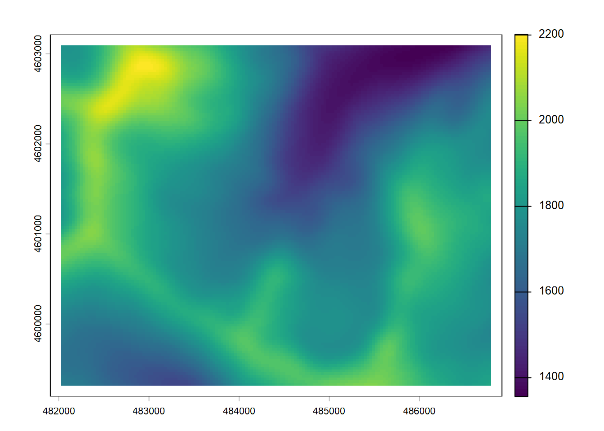
FIGURE 8.17: 9x9 focal mean of elevation
The effect is probably much more apparent in a hillshade, where the very smooth 9x9 low-pass filtered elevation will seem to create an out-of-focus hillshade (Figure 8.18).
slope9 <- terrain(elevLowPass9, v="slope")
aspect9 <- terrain(elevLowPass9, v="aspect")
plot(shade(slope9/180*pi, aspect9/180*pi, angle=40, direction=330),
col=gray(0:100/100))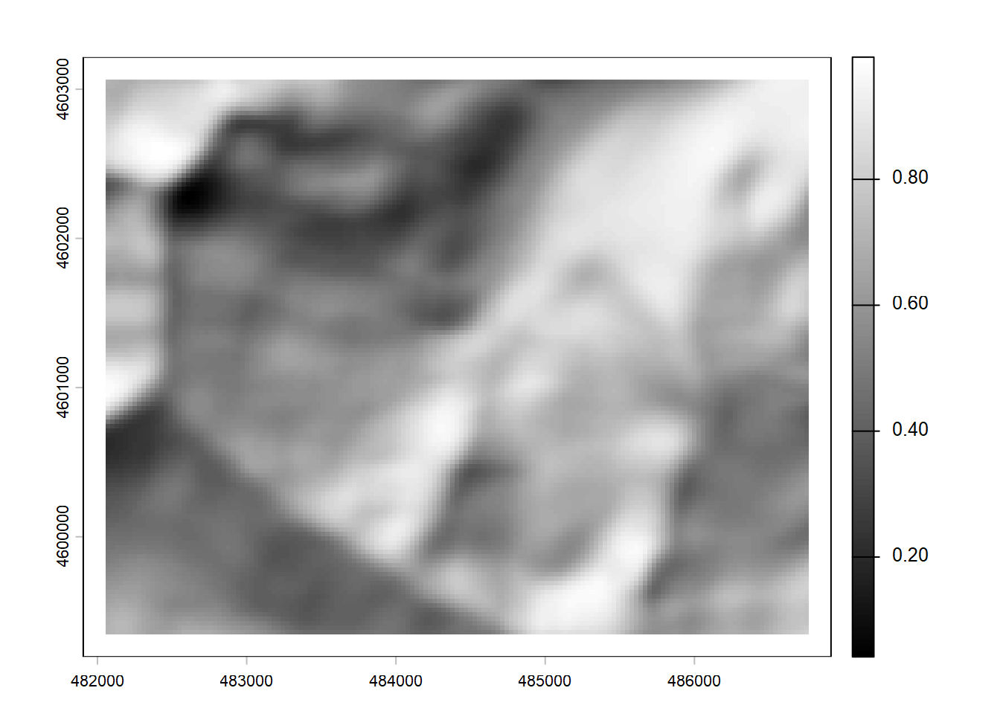
FIGURE 8.18: Hillshade of 9x9 focal mean of elevation
For categorical/factor data such as geology (Figure 8.19), the modal class in the neighborhood can be defined (Figure 8.20).
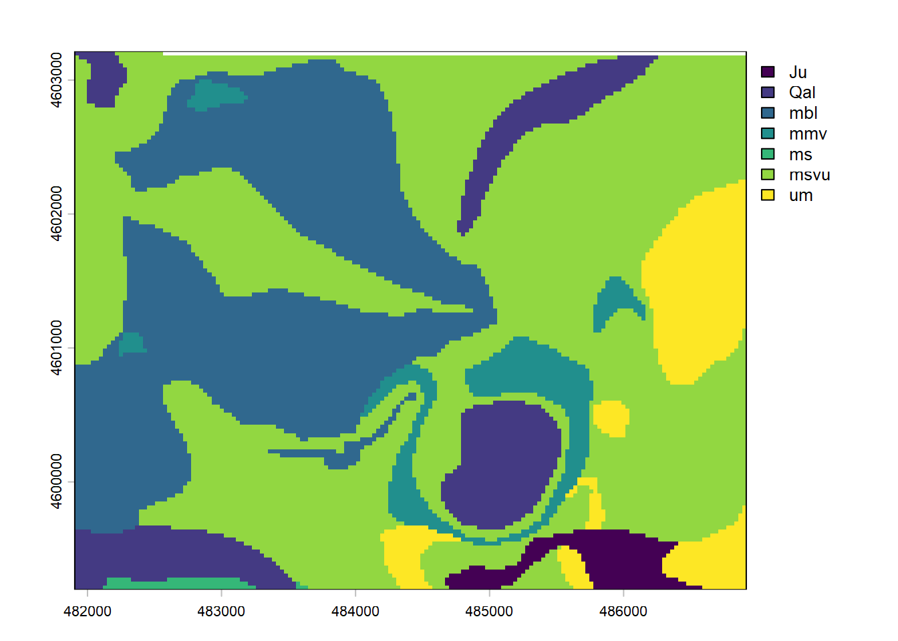
FIGURE 8.19: Marble Mountains geology raster
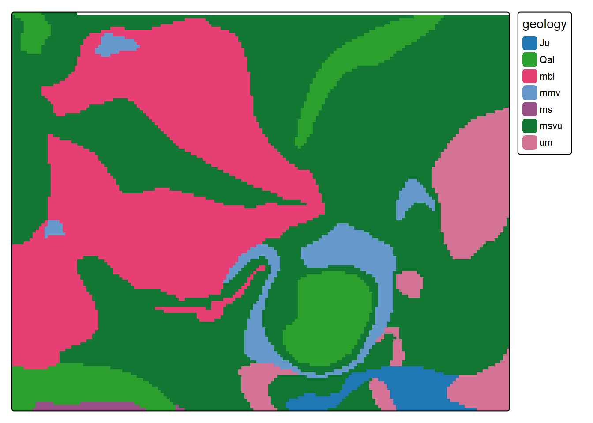
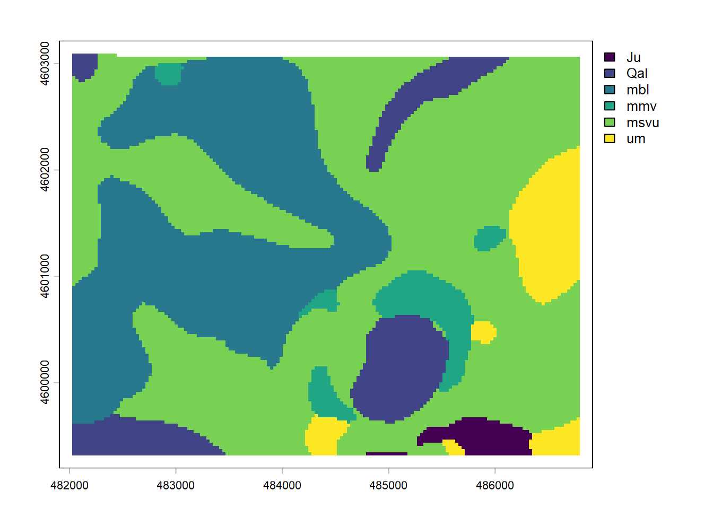
FIGURE 8.20: Modal geology in 9 by 9 neighborhoods
Note that while plot displayed these with a continuous legend, the modal result is going to be an integer value representing the modal class, the most common rock type in the neighborhood. This is sometimes called a majority filter. Challenge: how could we link the modes to the original character geology value, and produce a more useful map?
8.6 Zonal Statistics
Zonal statistics let you stratify by zone, and is a lot like the grouped summary (3.4.5) we’ve done before, but in this case the groups are connected to the input raster values by location. There’s probably a more elegant way of doing this, but here are a few that are then joined together.
meanElev <- zonal(elev,geol,"mean") |> rename(mean=elev)
maxElev <- zonal(elev,geol,"max") |> rename(max=elev)
minElev <- zonal(elev,geol,"min") |> rename(min=elev)## geology mean max min
## 1 Ju 1940.050 2049 1815
## 2 Qal 1622.944 1825 1350
## 3 mbl 1837.615 2223 1463
## 4 mmv 1846.186 2260 1683
## 5 ms 1636.802 1724 1535
## 6 msvu 1750.205 2136 1336
## 7 um 1860.758 2049 17198.7 Exercises: Raster Spatial Analysis
Exercise 8.1 See section 8.4 on deriving the extent of an elevation raster from the Marble Mountains as minimum and maximum x and y values, and of creating uniform random numbers between those limits. Modify this approach to stay away from the edges by about 5% of the range, and derive 100 points. If you derive xrange and yrange scalars that represent the positive difference between the maximum and minimum values of each, you can work out what the min and max limits are of uniform random numbers that would be 5% higher than the minimums and 5% lower than the maximums. Use methods from 3.2.1 to create a data frame pts with x and y columns, and display that data frame.
Exercise 8.2 Create sf points from those coordinate pairs in pts, using methods from 6.3, and set their coordinate system to that of the elevation raster, using a method such st_crs as described in 6.2, which illustrates features but the same applies to rasters. Then use tmap to display them on a base of the elevation raster.
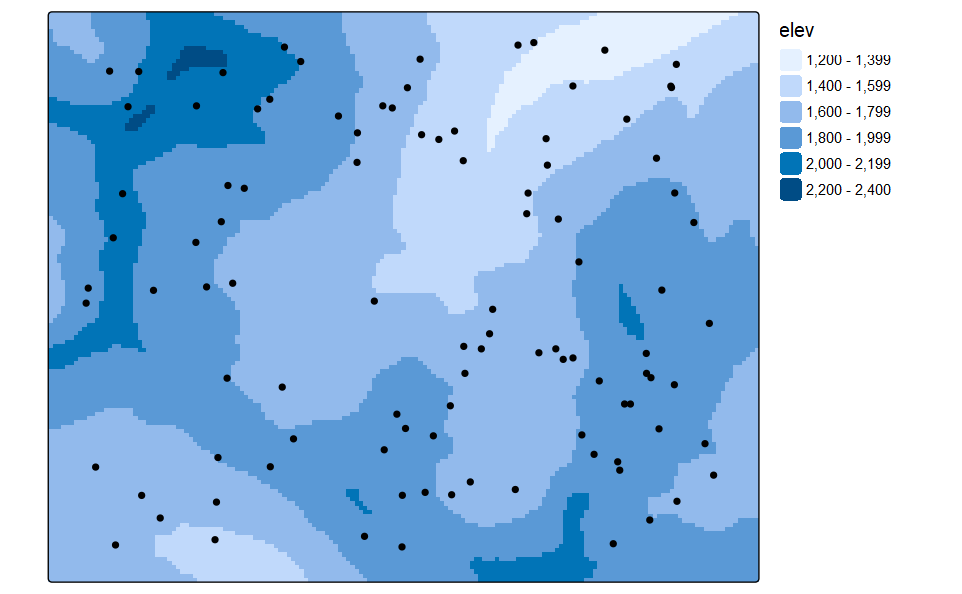
Exercise 8.3 Geology and elevation by stream and trail distance. Now use those points to extract values from stream distance, trail distance, geology, slope, aspect, and elevation, and display that sf data frame as a table, then plot trail distance (x) vs stream distance (y) colored by geology and sized by elevation (Figure 8.21).
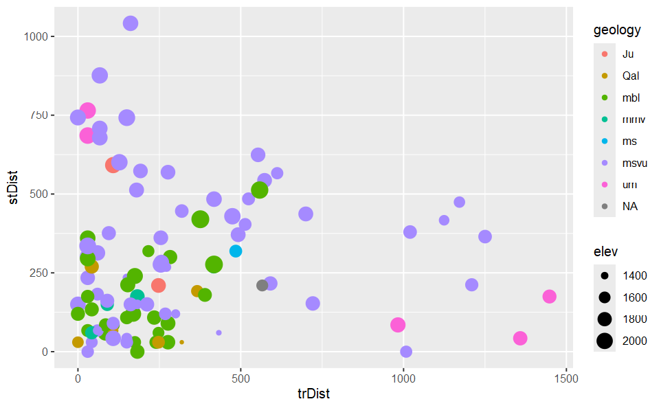
FIGURE 8.21: Geology and elevation by stream and trail distance (goal)
Exercise 8.4 Create a slope raster from the dem TIFF in the SanPedro folder in igisci, then a “steep” raster of all slopes > 26 degrees, determined by a study of landslides to be a common landslide threshold, then display them along with roads “SanPedro/roads.shp” in “black”, streams “SanPedro/streams.shp” in “blue”, and watershed borders “SanPedro/SPCWatershed.shp” in “darkgreen” with lwd=2, using methods from 8.2, figure 8.9.
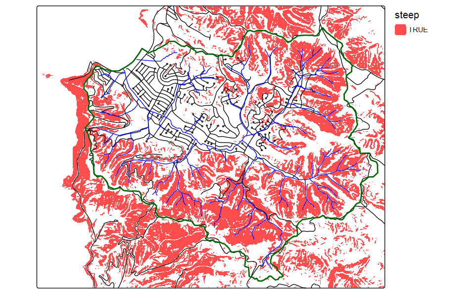
Exercise 8.5 Add a hillshade to that map.
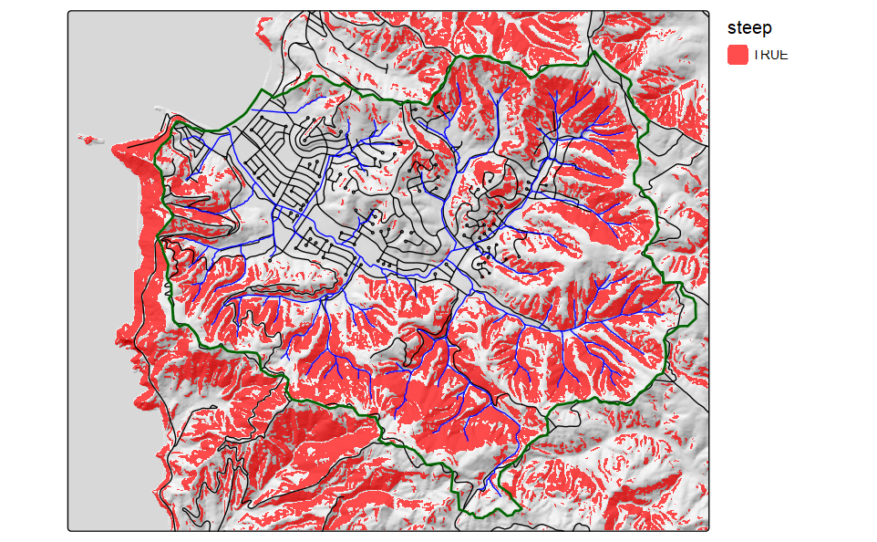